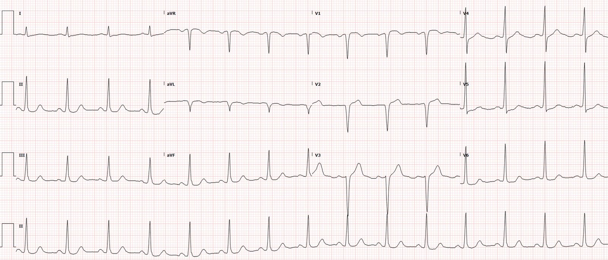
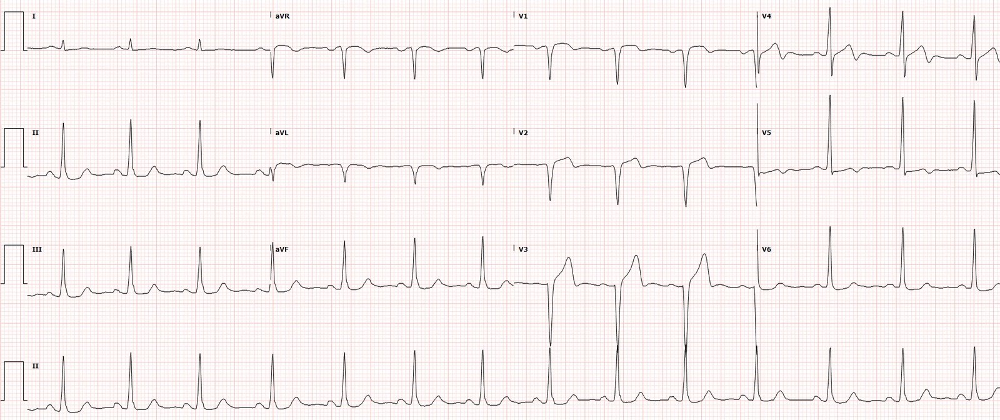
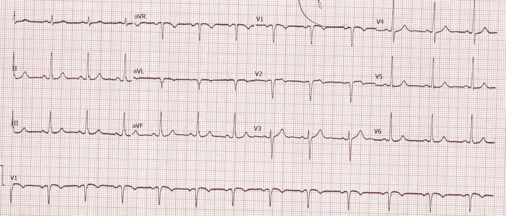
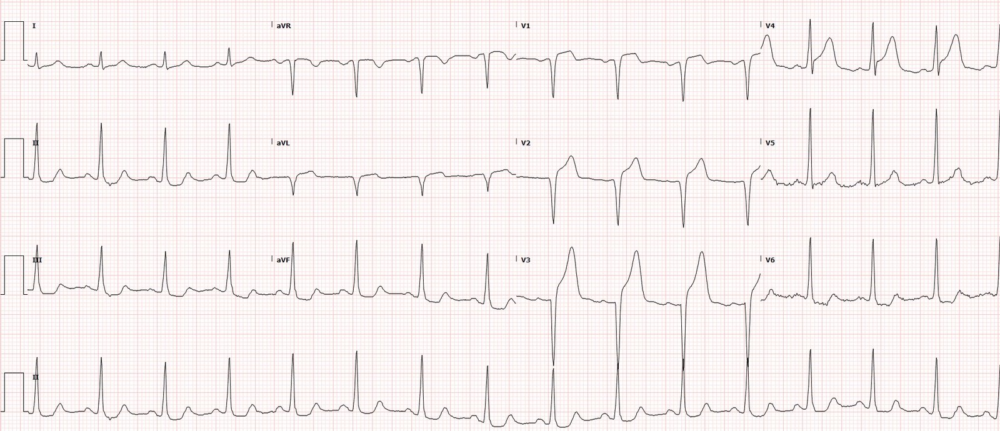
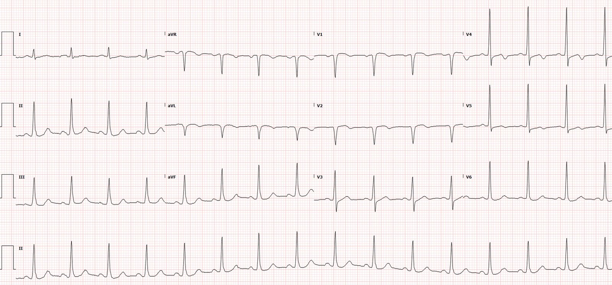
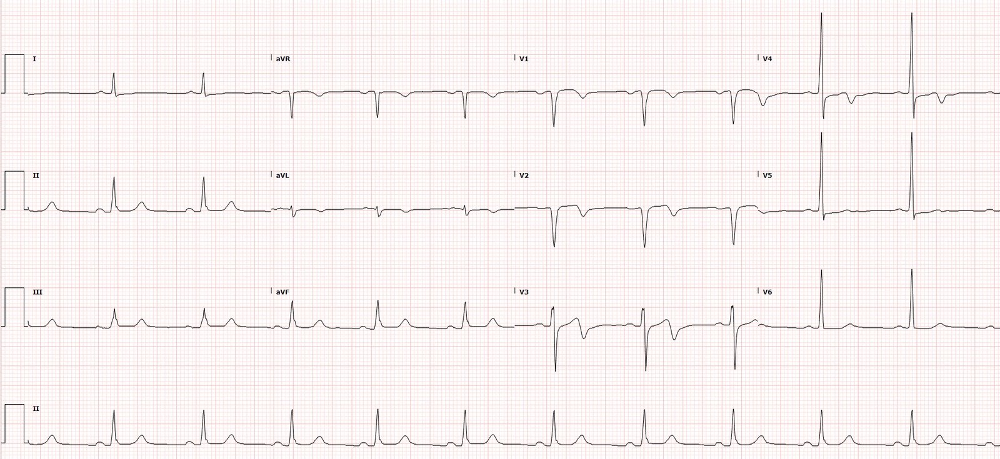
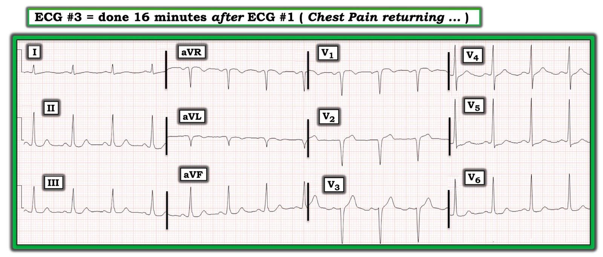
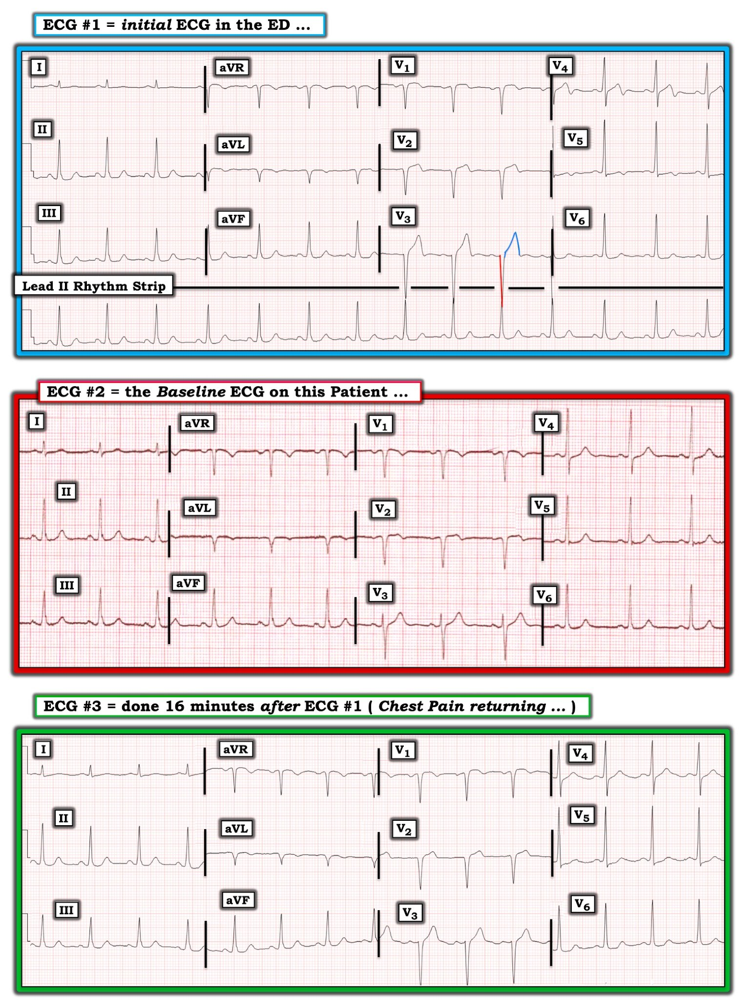

04/12/2020 — Một người đàn ông 49 tuổi bị đau ngực. Có phải OMI không? Có phải giả bình thường hóa không?
Bản dịch tiếng Việt của bài "A 49 year old man with chest pain. Is it OMI? is it pseudonormalization?" – Dr. Smith’s ECG Blog. Giữ nguyên toàn bộ 11 hình ảnh của bản gốc.
Tác giả: Pendell Meyers
Trước khi đi vào toàn bộ ca bệnh, hãy đọc điện tâm đồ này mà không có bất kỳ bối cảnh nào khác, ngoại trừ việc đây là một người đàn ông 49 tuổi bị đau ngực khởi phát cấp tính:


Bạn nghĩ gì? Bản ghi này sẽ được gọi là “ECG2”.
Đây là toàn bộ ca bệnh:
Một người đàn ông 49 tuổi, không có tiền sử bệnh lý, đến viện vì cảm giác khó chịu ở ngực khởi phát cấp tính trong vài giờ, đã giảm xuống mức độ 2/10 vào lúc đến khoa cấp cứu.
Đây là điện tâm đồ lúc phân loại (triage) của bệnh nhân (ECG1) lúc 1750:


Có sẵn một điện tâm đồ nền:


Điện tâm đồ nền này bình thường.
Điện tâm đồ lúc nhập viện cho thấy một số bất thường:
– ST chênh lên (STE) mới ở V1-V3 (không đạt tiêu chuẩn STEMI)
– Sóng T ở V1-V3 tăng diện tích so với trước (đáng lo ngại là sóng T tối cấp)
– ST chênh xuống (STD) mới, rất nhẹ ở V6
– Sóng Q ở V1-V3 (ở V3 là mới)
– Phần cuối sóng T đảo ngược ở V4 và V5, cho thấy tái tưới máu. Cũng có phần cuối sóng T đảo ngược rất tinh tế ở chuyển đạo V3!
Các dấu hiệu này gộp lại đáng lo ngại cho OMI do LAD vừa bắt đầu tái tưới máu (có phần cuối sóng T đảo ngược của tái tưới máu, nhưng vẫn còn tồn tại một ít STE và sóng T lớn, nhiều khả năng đang “trên đà giảm xuống”). Điều này đặc biệt phù hợp với dữ kiện lâm sàng: bệnh nhân đã đau dữ dội và nay đã đỡ.
Với những gì chúng ta biết về diễn tiến của tái tưới máu, nếu bệnh nhân vẫn duy trì được tái tưới máu thì chúng ta sẽ kỳ vọng các điện tâm đồ liên tiếp cho thấy quá trình tái tưới máu tiếp tục diễn tiến: đoạn ST và sóng T “xẹp” dần, cùng với sự tiến triển từ phần cuối sóng T đảo ngược thành sóng T đảo ngược hoàn toàn ở các chuyển đạo bị ảnh hưởng.
Ca bệnh tiếp diễn
Cơn đau của bệnh nhân đang quay trở lại. Một điện tâm đồ ghi lại được thực hiện lúc 1806 (đây là điện tâm đồ ở ngay đầu bài, ECG2):
Bạn nghĩ gì?
Điện tâm đồ này KHÔNG cho thấy tái tưới máu tiếp diễn – nó cho thấy điều hoàn toàn ngược lại: tắc lại. Tại sao?
Phần cuối sóng T đảo ngược trên điện tâm đồ trước nay đã biến mất. Thay vào đó, giờ đây có sóng T dương ở V3 đến V5. Nếu nhìn riêng lẻ những sóng T này, người ta có thể nghĩ rằng chúng có thể là những sóng T dương, nhỏ, bình thường. Tuy nhiên chúng KHÔNG bình thường, chúng là giả bình thường.
Khi một bệnh nhân chuyển từ trạng thái đã tái tưới máu sang tắc lại, phần cuối sóng T đảo ngược nhanh chóng được thay thế bằng sóng T dương của OMI. Trong quá trình chuyển tiếp này, sóng T trải qua một giai đoạn ngắn đẳng điện hoặc chỉ hơi dương, trước khi biến đổi thành sóng T tối cấp. Khi sóng T trở nên dương, hiện tượng này được gọi là “giả bình thường hóa” (pseudonormalization), vì có vẻ như sóng T đã chuyển từ “bất thường” (phần cuối sóng T đảo ngược) sang “bình thường” (sóng T dương thường được coi là “bình thường”). Tuy nhiên, đây là thay đổi bệnh lý nặng nề nhất có thể xảy ra trong bối cảnh này. Nó thể hiện tình trạng động mạch tắc lại cấp tính.
Điện tâm đồ vẫn không đạt tiêu chuẩn STEMI, nhưng chúng ta biết chắc chắn rằng động mạch bị tắc về mặt chức năng vào thời điểm ghi điện tâm đồ này.
Bệnh nhân tiếp tục đau, và một điện tâm đồ khác (ECG3) được ghi lúc 1834:


Phòng thông tim được kích hoạt dựa trên điện tâm đồ này và cơn đau đang tiếp diễn.
Vài phút sau khi kích hoạt phòng thông tim, cơn đau lại đột ngột biến mất. Một điện tâm đồ ghi lại được thực hiện vào thời điểm đó (1841, ECG4):


Lại tái tưới máu!
Kết quả troponin đầu tiên (troponin I độ nhạy cao) tăng ở mức 131 ng/L.
Bệnh nhân được đưa vào phòng thông tim và phát hiện một tổn thương huyết khối cấp tính 95% ở đoạn gần (dòng chảy TIMI 3), đã được đặt stent.
Kết quả troponin thứ hai là 407 ng/L. Không làm thêm xét nghiệm troponin nào nữa.
Siêu âm tim cho thấy phân suất tống máu 55%.
Ngày hôm sau (ECG5):


Bệnh nhân được xuất viện về nhà và cho đến nay vẫn ổn.
Những điểm cần học:
Khi sóng T đảo ngược của tái tưới máu đột ngột biến mất và được thay thế bằng sóng T dương, trong bối cảnh có triệu chứng thiếu máu cục bộ, thì đó là dấu hiệu chẩn đoán tắc lại như đã thấy ở trên (hiện tượng này được gọi là giả bình thường hóa).
Hiểu được diễn tiến tắc và tái tưới máu của OMI giúp bạn hiểu về ACS và OMI tốt hơn nhiều so với mô hình STEMI, và cho phép bạn phát hiện OMI sớm hơn, từ đó cải thiện hiệu quả của các liệu pháp tái tưới máu.

LƯU Ý: Cách đánh số các Hình của tôi trong ca này bị LỆCH — vì Dr. Smith và Dr. Meyers đăng ca này vào ngày 4 tháng Mười Hai, và họ đã thay đổi thứ tự trình bày các bản ghi sau khi tôi đã viết xong bình luận của mình (tôi viết vào ngày 23 tháng Mười Một năm 2020). Vì vậy, xin hãy xem Bình luận của tôi một cách độc lập. Tôi tin rằng vẫn còn những bài học có thể rút ra khi đọc Bình luận của tôi như một phần bàn luận riêng biệt và bổ sung. XIN CẢM ƠN — Ken Grauer, MD (6/12/2020).
===================================
BÌNH LUẬN CỦA TÔI, bởi KEN GRAUER, MD (23/11/2020):
===================================
Một trong những “điều cần nhớ” chính từ ca hôm nay là: Đây chính là lý do vì sao phải ghi các bản ghi liên tiếp.
- Hãy tưởng tượng điện tâm đồ duy nhất mà bạn được xem là bản ghi trong Hình 1. Đây là điện tâm đồ thứ 3 được trình bày trong phần bàn luận của Dr. Meyers ở trên — được ghi chỉ 16 phút sau điện tâm đồ thứ 1 đã trình bày ở trên.
- Bạn được cho biết bệnh nhân là một người đàn ông 49 tuổi, trước đây khỏe mạnh, đến viện vì đau ngực trong vài giờ trước đó. Triệu chứng của bệnh nhân đã cải thiện — nhưng cảm giác khó chịu ở ngực đang quay trở lại vào thời điểm ghi điện tâm đồ trong Hình 1.
Với bệnh sử này — NẾU điện tâm đồ trong Hình 1 là bản ghi duy nhất mà bạn được xem — bạn sẽ đọc điện tâm đồ này NHƯ THẾ NÀO?


Hình 1: Điện tâm đồ thứ 3 đã được trình bày ở trên trong ca hôm nay. Hãy tưởng tượng đây là điện tâm đồ duy nhất mà bạn thấy. Bạn sẽ đọc nó NHƯ THẾ NÀO? (Xem phần chữ).
Bạn sẽ đọc điện tâm đồ trong Hình 1 NHƯ THẾ NÀO?
Nhịp trên điện tâm đồ #3 là nhịp xoang, tần số ~90 lần/phút. Các khoảng PR, QRS và QTc đều bình thường. Trục mặt phẳng trán bình thường, khoảng +75 độ. Không đạt tiêu chuẩn điện thế của LVH.
Về Thay đổi Q–R–S–T:
- Có phức bộ QS ở chuyển đạo aVL — và các phức bộ QS ở chuyển đạo V1 và V2.
- Về tăng tiến sóng R — sau các phức bộ QS ở chuyển đạo V1 và V2, có thấy một sóng r rất nhỏ nhưng hiện diện ở chuyển đạo V3. Như vậy, tăng tiến sóng R ở các chuyển đạo thành trước kém — mặc dù vùng chuyển tiếp xảy ra bình thường giữa chuyển đạo V3 và V4.
- Về thay đổi ST-sóng T — có một số dấu hiệu không đặc hiệu. Ở các chuyển đạo chi, ST-T ở chuyển đạo I dẹt — có đoạn ST dẹt không đặc hiệu ở các chuyển đạo thành dưới — và có sóng T đảo ngược nông ở chuyển đạo aVL.
- Ở các chuyển đạo ngực — hình dạng ST-T ở các chuyển đạo thành trước không nhất thiết là bất thường. Có vẻ có ST chênh xuống nhẹ tại điểm J ở các chuyển đạo V4 đến V6.
NHẬN ĐỊNH: Nếu điện tâm đồ #3 là bản ghi duy nhất bạn thấy — các dấu hiệu sẽ là không đặc hiệu.
- Sóng T đảo ngược nông ở chuyển đạo aVL không nhất thiết bất thường khi là dấu hiệu đơn độc ở một chuyển đạo chi — xét đến trục mặt phẳng trán tương đối đứng và phức bộ QRS âm ở chuyển đạo aVL.
- Mặc dù các phức bộ QS ở chuyển đạo V1 và V2, đi kèm với sóng r không lớn hơn một sóng r rất nhỏ ở chuyển đạo V3, có thể phản ánh nhồi máu trước vách vào một thời điểm nào đó — các dấu hiệu này cũng có thể là kết quả của đặt sai vị trí điện cực hoặc LVH (dù không đạt tiêu chuẩn điện thế của LVH) hoặc biến dạng thành ngực.
- ST chênh xuống tại điểm J ở các chuyển đạo ngực bên có thể do thiếu máu cục bộ. Dù vậy — đây là một dấu hiệu không đặc hiệu, có thể cấp tính hoặc không.
- ĐIỀU CỐT LÕI về điện tâm đồ #3: Nếu đây là điện tâm đồ duy nhất bạn được xem — sẽ KHÔNG có cách nào biết được liệu có một biến cố cấp tính đang diễn ra hay không.
BÌNH LUẬN: Như Dr. Meyers đã nêu, lý do KHÔNG có cách nào biết được chỉ từ điện tâm đồ #3 rằng có một biến cố cấp tính đang diễn ra — là vì điện tâm đồ này thể hiện hiện tượng “giả bình thường hóa”. Cách dễ nhất để nhận ra hiện tượng này là đặt 3 bản ghi đầu tiên đã trình bày ở trên trong ca này cạnh nhau (Hình 2).
- Hãy XEM lại 3 bản ghi đầu tiên đã trình bày ở trên. Biết rằng cơn đau ngực khiến bệnh nhân này đến khoa cấp cứu đã gần như hết vào lúc ghi điện tâm đồ #1 — Có cần thiết phải tìm bản ghi nền ( = điện tâm đồ #2) để đưa ra chẩn đoán không?
- Bạn còn thấy ĐIỀU GÌ KHÁC trong các bản ghi liên tiếp này?


Hình 2: 3 điện tâm đồ đầu tiên được trình bày trong ca hôm nay (Xem phần chữ).
SUY NGHĨ CỦA TÔI về Hình 2:
Với bệnh sử đau ngực mới xuất hiện trong vài giờ đã gần như hết vào lúc ghi điện tâm đồ đầu tiên tại khoa cấp cứu — điện tâm đồ #1 này phù hợp với hội chứng Wellens.
- Hình ảnh ST-T ở chuyển đạo V4 là điển hình của Wellens. Như Dr. Meyers đã nêu — đoạn dốc xuống đứng từ đỉnh sóng T ở V4, kết thúc bằng một thành phần âm ở phần cuối dạng hai pha, là dấu hiệu chẩn đoán tái tưới máu trong bối cảnh lâm sàng này.
- Nhìn kỹ — phần cuối sóng T âm được gợi ý ở các chuyển đạo lân cận V3 và V5.
- Thông thường với hội chứng Wellens — nhồi máu rõ rệt chưa nên xảy ra. Với triệu chứng lúc tăng lúc giảm của bệnh nhân này và các phức bộ QS ở chuyển đạo V1 đến V3 — điều này khó xác định chắc chắn. Nhưng điều có thể nói — là KHÔNG thể nào hình dạng ST-T ở chuyển đạo V4 là “bình thường”.
- Ủng hộ cho một tình trạng tắc LAD đang tiến triển là ST-T tối cấp ở chuyển đạo V3. Để cho rõ (vì có sự chồng lấp với sóng R của dải nhịp chuyển đạo II dài bên dưới) — tôi đã vẽ bằng màu ĐỎ độ sâu của sóng S ở chuyển đạo V3 — và bằng màu XANH sóng ST-T ở chuyển đạo này. Với độ sâu sóng S tương đối khiêm tốn — tôi đọc ST-T ở chuyển đạo V3 là “đầy đặn” hơn mức đáng có, do đó là tối cấp trong bối cảnh lâm sàng này.
- Việc đánh giá ST-T ở chuyển đạo V1 và V2 tinh tế hơn. Nếu xét riêng lẻ — tôi sẽ không chắc chắn về các chuyển đạo này. Nhưng trong bối cảnh ST-T bất thường rõ ràng ở chuyển đạo V3 và V4 — ST chênh lên dạng vòm (coving) nhẹ nhưng có thật ở chuyển đạo V1 và ST chênh lên nhẹ kèm đoạn ST thẳng đuỗn rõ ở chuyển đạo V2 có vẻ nhiều khả năng là một phần của cùng một quá trình.
- Cuối cùng — có vẻ có ST chênh xuống nhẹ nhưng có thật ở chuyển đạo V6.
- ĐIỀU CỐT LÕI: Với bệnh sử trong ca này — tôi cho rằng tắc LAD đang diễn ra đã được gợi ý mạnh từ điện tâm đồ #1, ngay cả trước khi xem bản ghi nền.
Như Dr. Meyers đã nêu — việc tìm được bản ghi nền của bệnh nhân này ( = điện tâm đồ #2) đã xác nhận những nghi ngờ nêu trên của tôi về điện tâm đồ #1.
- Phức bộ QS kèm sóng T đảo ngược nông ở chuyển đạo aVL đã có từ trước — nên đó không phải là dấu hiệu mới trên điện tâm đồ #1.
- Ngoài ra, so sánh điện tâm đồ #2 với điện tâm đồ #1 cho thấy biên độ sóng R ở chuyển đạo V3 đã giảm (chuyển đạo này đã trở thành phức bộ QS trên điện tâm đồ #1) — và tất cả các thay đổi sóng ST-T mô tả ở trên trên điện tâm đồ #1 đều là mới so với bản ghi nền.
Tôi xin kết thúc bằng việc so sánh điện tâm đồ #3 với điện tâm đồ đầu tiên ghi tại khoa cấp cứu chỉ 16 phút trước đó. Lý do ghi điện tâm đồ #3 — là bệnh nhân đau ngực trở lại. Như Dr. Meyers đã nêu — có hiện tượng giả bình thường hóa (pseudonormalization) trên điện tâm đồ #3, do LAD bị tắc lại, làm mất đi sóng T đảo ngược do tái tưới máu thấy trên điện tâm đồ #1.
- Như điểm đầu tiên tôi đã nhấn mạnh — Ca hôm nay minh họa lý do vì sao cần ghi các bản ghi liên tiếp. NẾU chẩn đoán xác định tắc LAD đang diễn ra chưa được đưa ra từ điện tâm đồ #1 — thì lẽ ra đã phải được đưa ra khi đọc 3 bản ghi trong Hình 2, xét trong bối cảnh triệu chứng rất ít lúc ghi điện tâm đồ #1, và đau ngực dữ dội trở lại lúc ghi điện tâm đồ #3.
- Nhu cầu thông tim + PCI kịp thời lẽ ra đã có thể được xác lập trước khi xuất hiện ST chênh lên rõ rệt trên điện tâm đồ thứ 4.